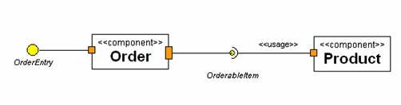

Modeling Connections With Assembly Connectors
See Also
You can use Assembly Connectors to model the connection from a required Interface or Port to a provided Interface or Port.
To model connections with an Assembly Connector:
- In the Modeling Palette, click the Assembly Connector icon
 .
.
- In the Diagram editor, click the required Interface or Port, and then drag it to the provided Interface or Port.
The IDE models the connection.

- See Also
- Working With Ports and Interfaces
Legal Notices